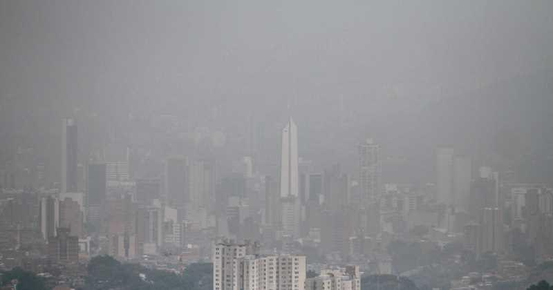
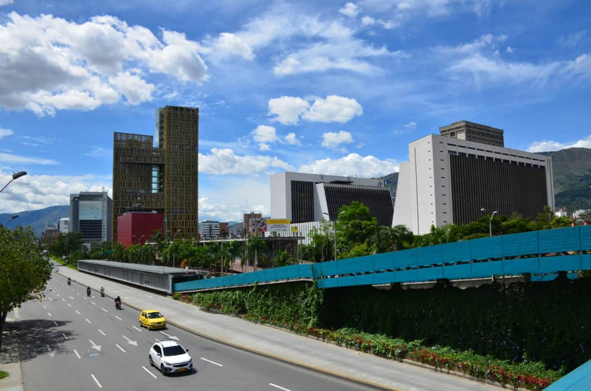

Nuestros Servicios
Análisis de datos
Optimizando el Futuro de Medellín a través del Análisis de Datos la capacidad de comprender y utilizar datos de manera efectiva se ha convertido en un factor crucial para abordar los desafíos ambientales globales. En este contexto, Ecometric emerge como una poderosa herramienta que impulsa la sostenibilidad ambiental a través del análisis inteligente de datos.
Limpieza de datos
Descubre el Futuro Verde de Medellín con nuestra Aplicación de Análisis Ambiental! Limpieza de Datos con Ecometric: Garantizando la Calidad y Fiabilidad de la Información Ambiental En el complejo mundo del análisis ambiental, la calidad de los datos es fundamental para la toma de decisiones informadas y precisas. En este sentido, Ecometric se destaca por su robusto proceso de limpieza de datos, que asegura que la información utilizada sea precisa, completa y coherente.
Análisis de bases de datos
Análisis de Bases de Datos con Ecometric: Desvelando Perspectivas Profundas sobre el Medio Ambiente En el núcleo de la misión de Ecometric se encuentra el análisis exhaustivo de las bases de datos ambientales, una tarea esencial para comprender los complejos sistemas naturales y urbanos que conforman nuestro entorno. Nuestra plataforma aprovecha una amplia gama de herramientas y técnicas para explorar, visualizar y extraer conocimientos significativos de grandes conjuntos de datos.